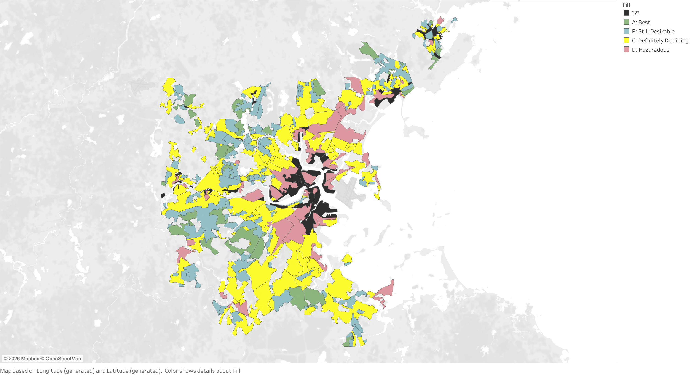
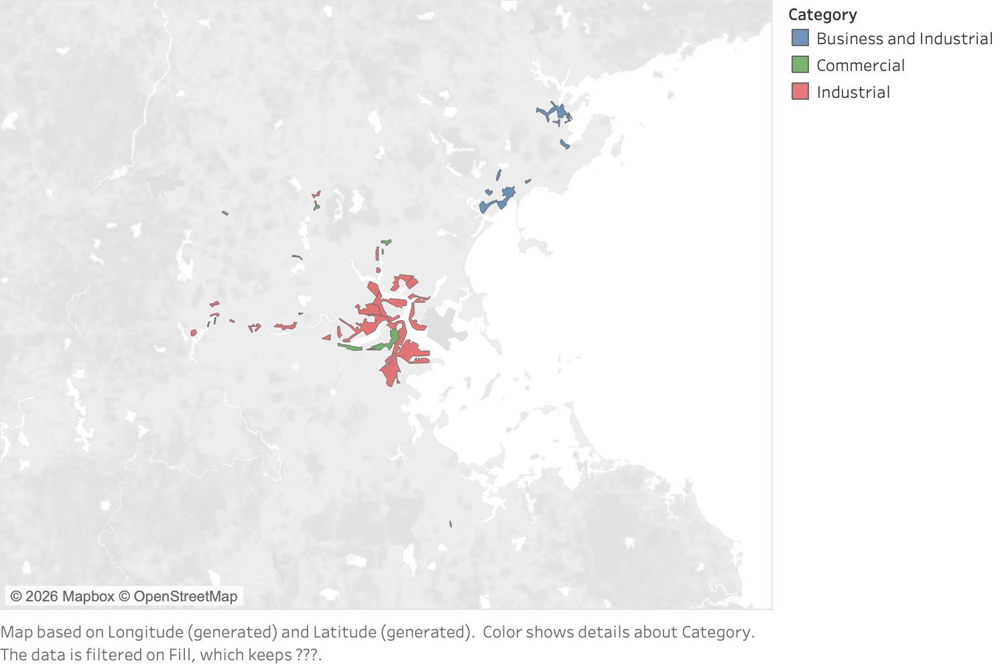
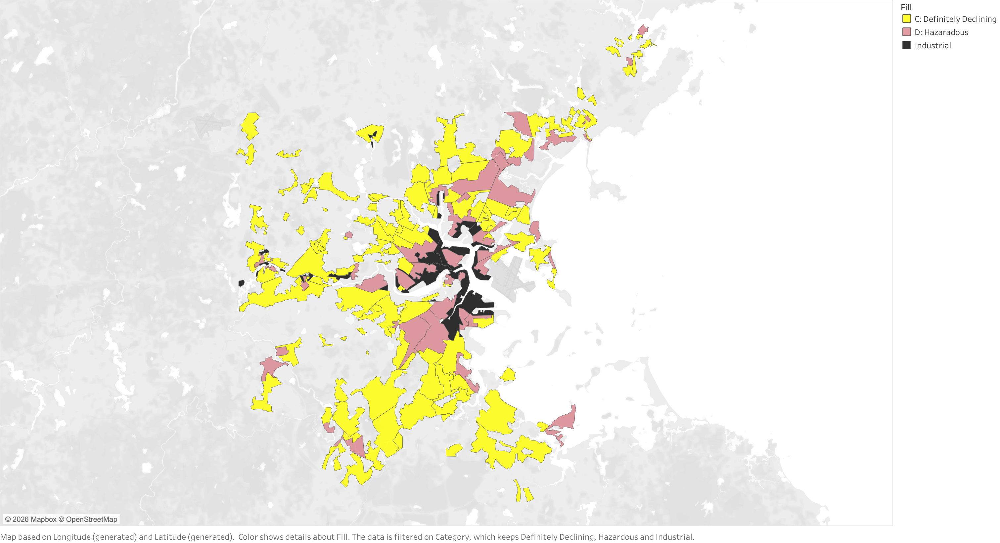
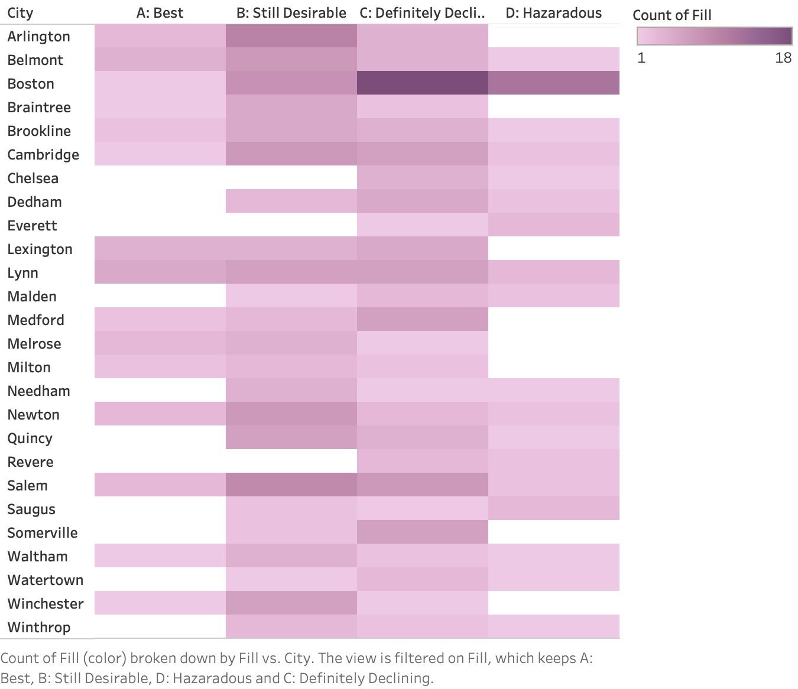
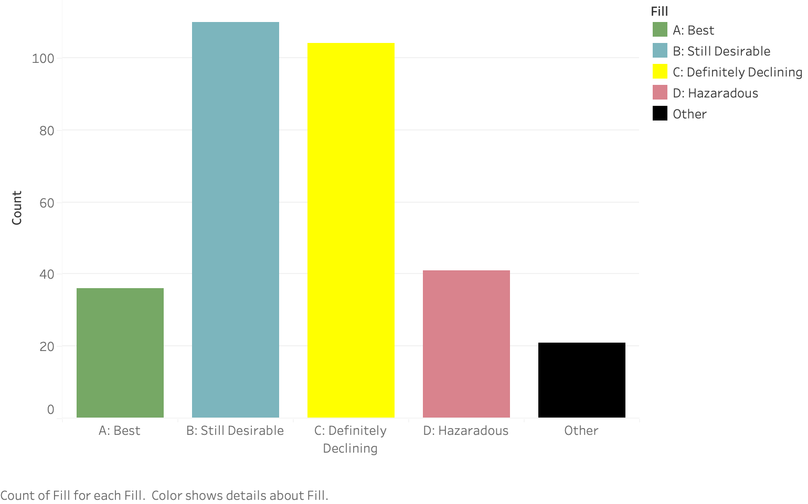
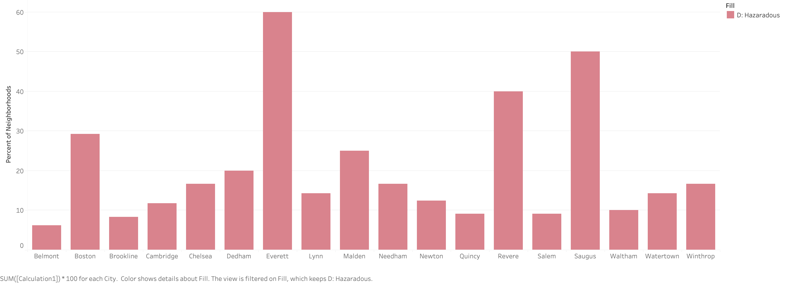
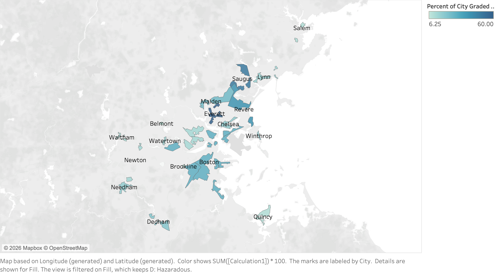

What areas of Greater Boston were redlined by the Home Owners' Loan Corporation (HOLC)?
For part of my senior capstone, I worked with Air Partners on analyzing air quality data.
While my project was focused on Galena Park, Texas, Air Partners has traditionally worked with
historically redlined communities in Boston who are disporportionally affected with poor air quality
(for example, Roxbury). Since my project did not work with the Roxbury community, I never actually
learned what neighborhoods were historically redlined, so this question felt like a good place to start.
What is the spread of redlined neighborhoods for each town of Greater Boston? (i.e. Framingham, Cambridge, ect)
Redlining was not uniformly distributed across cities. Understanding the spread of redlined neighborhoods within each town allows us
to assess whether racialized housing discrimination was concentrated in specific municipalities or broadly embedded across the region.
This question is inspired by Catherine Elton's article.
What are your chances of living in a historically redlined area given that you
live in a certain town? Rather than simply mapping where redlining occurred, this analysis asks a conditional question:
given that someone lives in a particular town, what is the probability that they reside in a historically redlined (HOLC “D”) area? This framing translates historical
housing discrimination into a measure of structural exposure at the municipal level. Because contemporary housing policy, zoning, and public
investment are governed locally, understanding the likelihood of redlining within each town provides insight into how unevenly the legacy of disinvestment
is distributed across Greater Boston.
Discoveries & Insights
Map of Historically Redlined Areas in Greater Boston

Map of neighborhoods in Greater Boston that were graded by the Home Owners' Loan Corporation (HOLC).
Green areas were given an "A" and deemed the best to live in. Blue areas were graded "B" and were considered
desirable to live in. Yellow areas were given a "C" and were thought to be declining. Red areas were given
a "D" and were considered hazardous to live in. Red areas typically were communities of color and were cheaper
to live in. Author Note: I am unsure what the black areas are
Generated Questions
What are the black areas?
Map of Non-Residental Areas in Greater Boston

The non-residental areas of Greater Boston (colored in black in the prior image). Red areas were industrial areas,
blue areas were business and commerical areas, and green areas were commercial areas. Fun fact! The area I grew up in is
labeled as "industrial" in this map.
Generated Questions
Were redlined neighborhoods more likely to border industrial areas?
TO DO

Spatial overlap between historically redlined neighborhoods and industrially designated areas in Boston. Areas graded
“C: Definitely Declining” (yellow) and “D: Hazardous” (red) are shown alongside zones labeled industrial (black),
illustrating the concentration of industrial land use within and adjacent to formerly redlined communities.
Spread of HOLC grades in Greater Boston neighborhoods

A heatmap of the HOLC grades given to different neighborhoods in Greater Boston, separated by town. Darker hues mean
more neighborhoods. Industrial, Commercial, and Commercial and Business areas have been removed.
Generated Questions
What's the general spread of HOLC grades in Greater Boston?
Spread of HOLC grades in Greater Boston

The spread of HOLC grades in Greater Boston. 36 neighborhoods were given an A grade,
110 neighborhoods were given a B grade, 104 neighborhoods were given a C grade, and
41 neighborhoods were given a D grade. Industrial, Commercial, and Commercial and Business areas
were not given a grade.
Generated Questions
What percentage of the each city is redlined? (Sorta stumbled on my last question)
Share of HOLC “D” (Hazardous) Neighborhoods by City

This figure shows the percentage of neighborhoods within each city that were graded “D” (“Hazardous”) under the
Home Owners’ Loan Corporation (HOLC) maps (1935–1940). Percentages are calculated as the number of D-graded areas
divided by the total number of graded areas in each city. Substantial variation is evident, with cities such as
Everett and Saugus exhibiting notably higher shares of historically redlined districts compared to cities such as Belmont
and Brookline.
Generated Questions
Why are Everett, Saugus, and Revere so high?
Is there spatial clustering across neighboring towns?
Clustering of redlined areas

Percentage of neighborhoods graded “D” (“Hazardous”) under 1935–1940 HOLC maps by municipality in Greater Boston.
Darker shading indicates a higher share of each city’s graded areas classified as hazardous. The map reveals uneven
spatial concentration, with several northern and coastal municipalities exhibiting substantially higher proportions
of historically redlined districts than many western suburbs.
Summary
This exploratory analysis examined the geography and distribution of Home Owners’ Loan Corporation (HOLC) grades across Greater
Boston, with particular attention to historically redlined (“D” or “Hazardous”) neighborhoods. The maps reveal that redlining
was not uniformly distributed across the region. Instead, lower-graded neighborhoods were spatially concentrated, particularly in
certain northern and coastal municipalities, while many western suburbs had comparatively fewer “D” designations. When reframed as a
conditional probability—what share of a city’s graded neighborhoods were classified as hazardous—the analysis highlights substantial
variation across towns. Cities such as Everett, Saugus, and Revere exhibit markedly higher proportions of redlined areas than
municipalities such as Belmont or Brookline, suggesting that structural exposure to disinvestment differed meaningfully at the municipal level.
The analysis also suggests a spatial relationship between redlined neighborhoods and industrial land uses. Overlaying HOLC grades with
non-residential zoning categories indicates that many “C” and “D” graded areas bordered or overlapped with industrial zones.
This pattern raises important questions about environmental burden, land use planning, and long-term exposure to pollution in
historically marginalized communities. Although further statistical testing would be required to quantify this relationship,
the spatial co-location provides preliminary evidence consistent with broader scholarship linking redlining to environmental inequities.
By analyzing both the overall spread of grades and the share of hazardous designations within each town, the report reframes
redlining as a measure of structural exposure embedded within local governance boundaries. These findings provide a foundation for
future work connecting historical housing policy to contemporary disparities in environmental quality, public investment, and
health outcomes in Greater Boston.